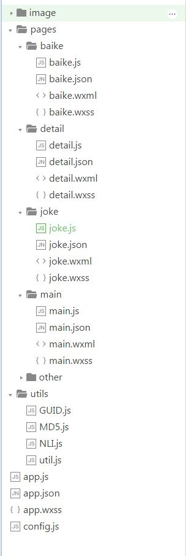

智能小蜜（基于olami开放开台）
智能小蜜（基于olami开放开台）1. 概述2. 运行效果3. 项目框架4. 主要代码说明：4.1 天气查询4.2 导航到子页面4.3 搜索功能4.4 查百科功能4.5 swiper实现图片轮播5. 其它补充5.1 从视图层到逻辑层的数据传递5.2 currentTarget与target的区别6. 总结
1. 概述
该小程序支持功能有查天气、查诗词、算算术、查日历、看笑话、看故事、聊天等，通过用户输入语句智能解析用户意图输出相应答案。
背景介绍：OLAMI【欧拉密】由 威盛电子人工智能软件研发团队所研发的 AI 平台，提供各项云端 API、管理界面、以及多元机器感知解决方案的人工智能软件开发平台，提供包含视觉、听觉、语言理解等领域各项 API、管理介面，以及多元化机器感知解决方案的人工智能软件开发平台，让开发者或企业能轻松的将人工智能加入至他们的产品中，使其客户享有更完美的用户体验。
2. 运行效果
主界面如下：

百科搜索功能：

当你输入“姚明的身高”，会自动返回相关信息：

3. 项目框架
- main为首页面，实现天气查询（使用modal组件显示弹出框修改城市），和导航子页面诗词、日历、数学、单位转换、24点游戏。
- joke为笑话页，实现看笑话、看故事。
- baike为百科页，实现百科知识查询。
- other为其他页，实现广告页轮播。
- detail为从main页导航到的子页面，实现功能有诗词、日历、数学、单位转换、24点游戏、聊天等。

4. 主要代码说明：
4.1 天气查询
使用modal组件显示弹出框修改城市
main.wxml
xxxxxxxxxx<modal title="请输入城市名" hidden="{{modalHidden}}" bindconfirm="modalConfirm" bindcancel="modalCancel"><view class="setcity"><image style="width: 40px; height: 40px; " mode="aspectFit" src="../../image/city.png"></image><input class="input" placeholder="点此手动输入" placeholder-style="color:#6aa84f" maxlength="10" confirm-type="send" bindblur="bindConfirmControl" /></view></modal>main.js
xxxxxxxxxxmodalConfirm: function (options) {var self = this;self.setData({modalHidden: true});var city = wx.getStorageSync("city")if (typeof city != 'undefined' && city != ''){NliProcess("今天" + city + "的天气", self);}},modalCancel: function (options) {var self = this;self.setData({modalHidden: true});wx.clearStorage();},bindConfirmControl: function (e) {var inputTxt = e.detail.value;if (inputTxt != '')wx.setStorageSync("city", inputTxt);}4.2 导航到子页面
首页还支持导航到子页面诗词、日历、数学、单位转换、24点游戏
main.wxml
xxxxxxxxxx<view class="list"><block wx:for="{{app_display}}"><view class="text-app" data-id="{{item.num}}" bindtap="appClick"><image class="img" style="width: 60px; height: 60px; " mode="widthFix" src="{{item.imgurl}}"></image><text class="text-app-info">{{item.display}}</text></view></block></view>main.js
xxxxxxxxxxappClick: function (options) {var id = options.currentTarget.dataset.id;wx.navigateTo({url: '../detail/detail?id=' + id})}4.3 搜索功能
支持搜索诗词、日历、数学、单位转换、24点游戏（使用radio组件实现单项选择器）。
从main页跳转到detail页时，传的参数“id”可在detail.js的onLoad方法中获得。由id（即checkedno）值来设置radio的初始选项。
detail.js
xxxxxxxxxxonLoad: function (options) {var self = this;checkedno = options.id; self.setData({checkedno: checkedno,failTxt: expList[checkedno]}) }detail.wxml
xxxxxxxxxx<radio-group class="radio-group" bindchange="radioChange"><label class="radio" wx:for="{{radioitems}}"><radio value="{{item.name}}" checked="{{index == checkedno}}"/>{{item.value}}</label></radio-group>4.4 查百科功能
icon组件type值：success, success_no_circle, info, warn, waiting, cancel, download, search, clear。这里用的search类型。
baike.wxml
xxxxxxxxxx<view class="text-search"><icon type="search" size="25" color="blue" class="searchIcon" /><input class="input" placeholder-style="color:#6aa84f" maxlength="50" placeholder="点此手动输入" value="{{inputTxt}}" confirm-type="send" bindconfirm="bindConfirmControl" bindfocus="bindFocusClear" /></view>4.5 swiper实现图片轮播
other.wxml
xxxxxxxxxx<swiper indicator-dots="true" autoplay="true" interval="4000" duration="2000"><swiper-item><image src="../../image/img1.png" class="slide-image"/></swiper-item><swiper-item><image src="../../image/img2.png" class="slide-image"/></swiper-item><swiper-item><image src="../../image/img3.png" class="slide-image"/></swiper-item><swiper-item><image src="../../image/img4.png" class="slide-image"/></swiper-item></swiper>这页还实现了一个APP的背景，以下是背景图片设置方式：
other.wxss
xxxxxxxxxxpage{background-image:url('http://img.blog.csdn.net/20170812173448986?watermark/2/text/aHR0cDovL2Jsb2cuY3Nkbi5uZXQvdTAxMTgyNzUwNA==/font/5a6L5L2T/fontsize/400/fill/I0JBQkFCMA==/dissolve/70/gravity/Center');background-size: cover;}
5. 其它补充
5.1 从视图层到逻辑层的数据传递
详情可参考微信小程序—事件
<view id="tapTest" data-hi="WeChat" bindtap="tapName"> Click me! </view> Page({tapName: function(event) {console.log(event)}})其中，event的信息如下：
{"type":"tap","timeStamp":895,"target": { "id": "tapTest", "dataset": { "hi":"WeChat" }},"currentTarget": { "id": "tapTest", "dataset": { "hi":"WeChat" }},5.2 currentTarget与target的区别
target：触发事件的源组件。
currentTarget：事件绑定的当前组件
如以下例子中，点击 inner view 会先后触发handleTap3和handleTap2(因为tap事件会冒泡到 middle view，而 middle view 阻止了 tap 事件冒泡，不再向父节点传递)，点击 middle view 会触发handleTap2，点击 outter view 会触发handleTap1。
<view id="outter" bindtap="handleTap1">outer view<view id="middle" catchtap="handleTap2">middle view<view id="inner" bindtap="handleTap3">inner view</view></view></view>
6. 总结
这个小程序表面看起来粗糙，其实里面包含很多的细节，相关源代码大家要仔细阅读。欢迎上课随时讨论！